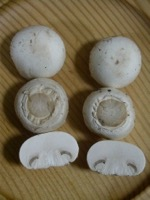

マッシュルームの生産量 都道府県ランキング
全8県の順位と、とれた量
マッシュルームが日本でいちばん多くとれるのは千葉県です。2,850 tで、全国（8,210 t）の35%を占めます。

| 順位 | 都道府県 | 収穫量 | 全国に占める割合 |
|---|---|---|---|
| 1位 | 千葉県 | 2,850 t | 35% |
| 2位 | 岡山県 | 2,200 t | 27% |
| 3位 | 山形県 | 1,260 t | 15% |
| 4位 | 茨城県 | 1,210 t | 15% |
| 5位 | 北海道 | 340 t | 4.1% |
| 6位 | 和歌山県 | 221 t | 2.7% |
| 7位 | 岩手県 | 128 t | 1.6% |
| 8位 | 福島県 | 2 t | 0.0% |
この数字について
- 分類：きのこの仲間
- 全国の収穫量：8,210 t
- この数字が表すもの：収穫量（畑や田でとれた重さ）
- 調査：地域特産野菜生産状況調査 令和6年産
- 8県分を調査（調査していない県は順位に入りません）
マッシュルームの生産量について、よくある質問
- マッシュルームの生産量が日本一の都道府県はどこですか？
- 千葉県です。地域特産野菜生産状況調査（令和6年産）で2,850 tでした。
- マッシュルームの生産量ランキング2位・3位はどこですか？
- 2位は岡山県（2,200 t）、3位は山形県（1,260 t）です。
- マッシュルームの生産量ランキング4位・5位はどこですか？
- 4位は茨城県（1,210 t）、5位は北海道（340 t）です。マッシュルームの全8県の順位は上の表のとおりです。
- マッシュルームの全国の生産量はどれくらいですか？
- 8,210 t（令和6年産）です。